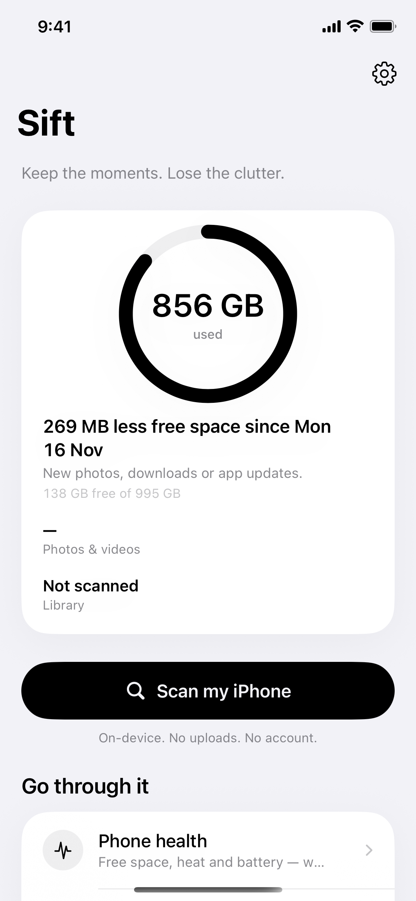
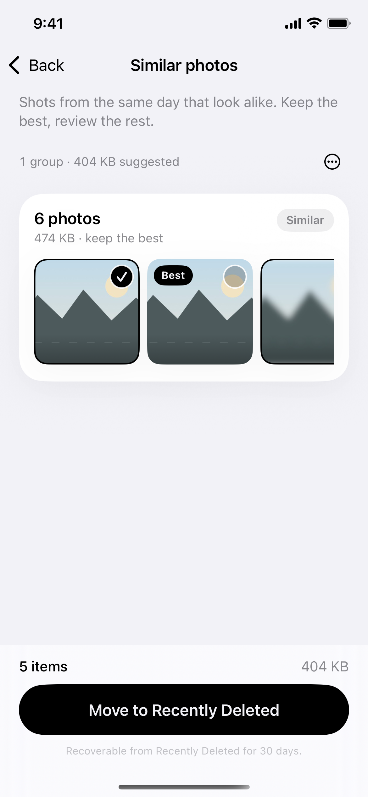
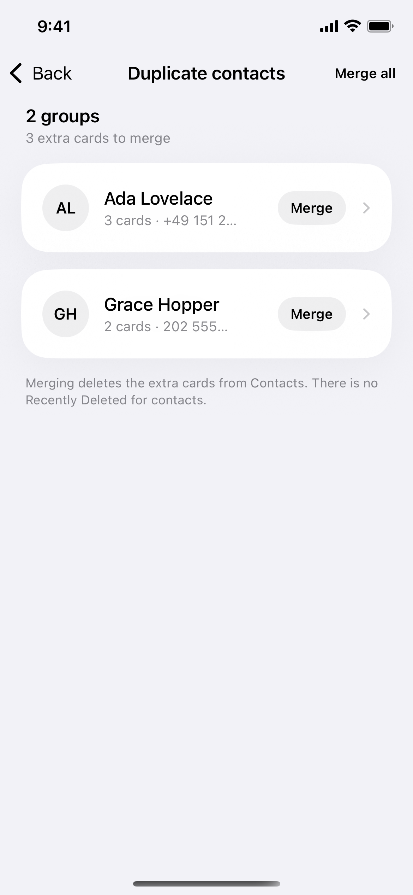
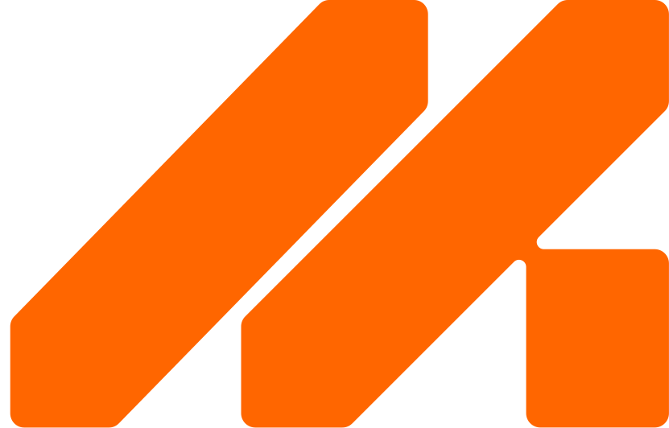

Screenshots
Tickets, chats and receipts you already used, sorted by size.
Free · Open source · On-device
Sift finds the screenshots, duplicates, blurry photos, large files and repeated contacts you no longer need. It works on your iPhone and never sends anything anywhere.
Unsigned IPA. Re-sign with AltStore, SideStore or Xcode — no App Store required.

Sift 1.3 · iPhone 12 · light
01 / What it finds
No fake gauges. No “boost” buttons. Sift only touches media, contacts and files you choose, through Apple's frameworks.
Tickets, chats and receipts you already used, sorted by size.
A 64-bit perceptual hash plus a Vision feature print. The same frame is caught once, not guessed.
Same-day lookalikes grouped together. Sift suggests the sharpest frame and shows the rest.
A conservative variance-of-Laplacian ranking. Soft, not subjective.
Photos and videos over 25 MB. Every item with its real size.
Shared phone or email only. Preview the merge before anything is deleted.
02 / The flow
Sift measures free space at every visit. After a cleanup it waits until iOS actually returns the bytes before it says a number.



Keep the moments. Lose the clutter.
Every photo removal goes through Apple's PhotoKit and lands in Recently Deleted for 30 days. Sift measures the volume again afterwards and shows what actually came back — including zero.
03 / Honest limits
iOS does not let any third-party app clear another app's cache, free RAM or cool the CPU. Apps that claim otherwise are selling a feeling.
04 / Privacy
There is no networking code in Sift. No account, no crash reporter, no third-party SDK. Photos and contacts stay in the app sandbox and Apple's frameworks. The privacy manifest declares no tracking and no collected data.
Verify it yourself: grep -rnE "URLSession|NWConnection|Analytics" Sift returns nothing.
05 / Download
Sift is a complete SwiftUI project with no packages to install. Build it in Xcode, sign it with your own team, keep it.
Sift is free and open source. There is no App Store listing yet — that membership costs €99/year — so the free path signs the app with your Apple ID, not ours. No account with us, no ads, no analytics.
Requires iOS 17+ and an iPhone 12 or newer. MIT licensed. No account, ads, analytics or subscription.

A ModernAmusement project · BielefeldScan on iPhone
Downloads the unsigned IPA directly from this site. Install with AltStore or SideStore — the three steps above.
Apple requires a paid Apple Developer Program membership (~€99/year) for the App Store, TestFlight, notarisation and alternative marketplaces. Sift is a free MIT project without that budget. The honest free path is this unsigned IPA: you sign it with your own Apple ID, the code stays public, and nothing is hidden.
Add the Sift source to AltStore for automatic update checks.